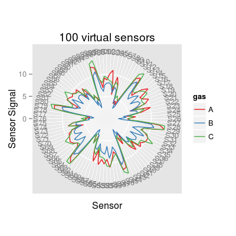

Demo VirtualSensors.
Description
Demo VirtualSensors.
Examples
## part 1: explore the parameter 'beta' # - values: 1, 2, 5, 10 nsensors <- 34 plist <- list() for(beta in c(1, 2, 5, 10)) { sa <- SensorArray(nsensors = nsensors, beta = beta) plist <- c(plist, list(plot(sa, 'polar', main = paste("beta:", beta), graphics = "ggplot", ret = TRUE))) } library(gridExtra) grid.arrange(plist[[1]], plist[[2]], plist[[3]], plist[[4]])## part 2: compare two arrays (UNIMAN array of 17 sensors vs. virtual aray of 100 sensors) # - beta has the default value (to be 2) # UNIMAN array of 17 sensors sa.uniman <- SensorArray(nsensors=17) # 100 sensors (replicas from 17 UNIMAN sensors) sa <- SensorArray(nsensors=100) # plot plot(sa.uniman, main = "17 UNIMAN sensors")
plot(sa, main = "100 virtual sensors")
# plot gases A and C gases <- c(1, 3) plot(sa.uniman, 'affinitySpace', gases = gases, main = "17 UNIMAN sensors")
plot(sa, 'affinitySpace', gases = gases, main = "100 virtual sensors")